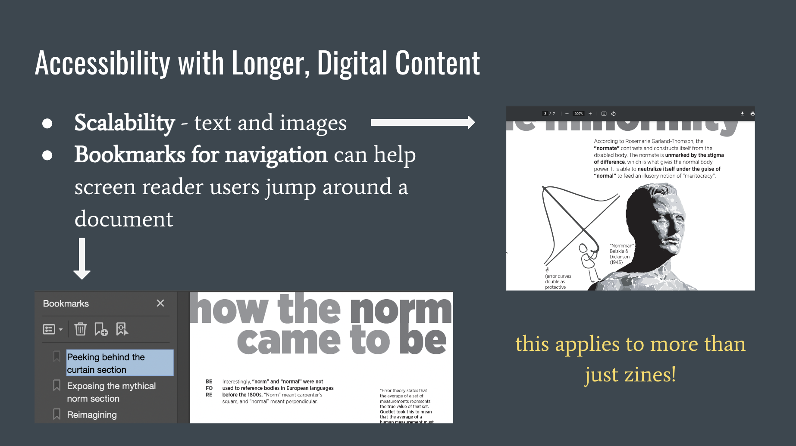
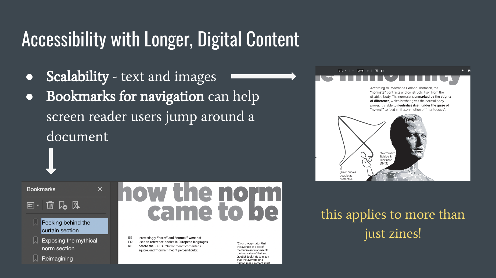

workshops
recent workshops
For spring 2024, I was hired by the University of Pittsburgh’s English department to design and facilitate two workshops.

Accessible Digital Portfolios
[ March 26th, 2024. ]
Hosted by the English Department’s Professional Development course. Focused on key accessibility topics relevant to students' digital portfolios, like how code interacts with assistive technologies and how to create more accessible visual styling.
Design a Spaceship, Part II
[ April 11th, 2024. ]
Preview talk designed for Dr. Jeff Aziz's Unruly Bodies class. Discussed disability and space, as well as thinking about disability in ways that lead to building more adaptive environments.
[ April 12th, 2024. ]
Main workshop co-designed with Dr. Jessica FitzPatrick, as a second iteration of the Design a Spaceship workshop ran in spring 2023 (mentioned below). Featured a crew of some new and some familiar access needs, an all new ship prompt, and more in-depth persona packets. The resulting sketches, notes, and swatches made by participants, as well as some of our slides and photos from the event, are featured in Pitt's 2024 Digital Media Showcase. (We're hoping to iterate further on this project, so stay tuned!)
past workshops
Spring 2023, I worked as Pitt’s Digital Media Lab intern to organize and run three workshops, centered on inclusive and accessible design. For each, I was responsible for designing promotional material like fliers, sending out communications and handling registration, and designing our teaching materials (demo documents, slides, etc.).
download the spaceship event flier as an accessible PDF.

Design a Spaceship
This workshop was inspired by the “Design a Spaceship” essay from Uncanny Magazine. Co-run by the DML director, Dr. Jessica FitzPatrick, and myself, we introduced attendees to both speculative fiction and speculative design as pathways to imagining more inclusive futures (and how we can apply that imagining to our present-day designs). Dr. Fitz brought the sci-fi expertise to our introduction, while I led the inclusive design part of the intial talk.
We were careful to encourage responsible speculation. We wanted to avoid the kind of technoableism that can sometimes come with nondisabled designers thinking the solution is to “fix” disabled bodies. We were explicit that we were creating adaptive environments instead. (The environment should bend to the body, not the other way around.) By giving a science fictional crew (and using that as a way to talk about the ethics of community-based versus assumption-based personas), we explored design with different access needs in mind.
Participants naturally began to think about how to make their spaceship components multisensory and controls multi-operational for positive redundancy. We also reflected on Universal Design and Inclusive Design as methodologies, thinking about where we found each methodology useful. (Participants ended up willingly staying over an hour longer than our initial timeslot, to continue designing and discussing!)
This is a workshop Dr. Fitz and I are extremely excited to iterate on, so stay tuned!
download the accessible web workshops flier as an accessible PDF.

Accesible Web Design
This was a two-workshop series, educating on the importance of and current state of web accessibility. (We also addressed the nuance of the “over 90% of the web is inaccessible” statistic in the advertising flier, with a conversation about the WebAIM Million survey).
Participants were sent a demo document that I coded to be both a resource document and a practice tool. The content on the HTML pages explained each topic we covered in workshop, but we also looked at how the HTML/CSS files were coded in a text editor. One pairing of HTML/CSS pages were coded to be accessible, while the other pair was made as an example of what not to do. Participants could work to make the inaccessible pages more accessible at their own pace during and beyond the workshop.
The first workshop covered the basics of accessible HTML and how our code interacts with assistive tech like screen readers. We played “spot the difference” with the code and talked about what was happening at the HTML level to make two visually similar pages different in terms of accessibility. The second workshop looked at CSS and how visual styling can be made more accessible through color/font choice, scalability, and more.
Crucially, this entire workshop series emphasized the importance of accessibility beyond a legal-minimum/compliance or “checklist” mentality, demonstrating the why behind all of the techniques discussed.


 
